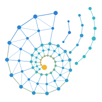

A kinder Kind of AI.
PLAN builds a small business its website with models named after flowers, led by Daisy. PLAN 2 writes software with models named after insects, led by Butterfly. PLAN 3 is a made-to-measure assistant, with models named after sea creatures from mythology. Its first one is Siren.
Siren is the voice that lets you talk to any of our models.
THE VOICE
Where it stands: designed. Siren is not built or measured yet. Every number on this card will come from a measurement, and this card will be updated when there is one.
Siren
Siren · the voice, designedThe voice
She talks with the person, hands the work to the right specialist and explains the answer. She never pretends to be the specialist: when she does not have a model for the question, she says so.
Why the name: the voice that speaks to people.
What Siren does
Siren is the voice. She is the one model whose whole job is talking with a person:
- she understands what you mean, even when it is said loosely, in your own words and language;
- she asks back when something is unclear, instead of guessing;
- she hands the real work to the right specialist (Daisy for a question about your data, a coder for a piece of software, and so on) and explains the result in plain words.
Siren never pretends to be the specialist. When she does not have a model for the question, she says so.
Why it matters: our specialists are small and very good at one thing each, but they do not chat. With Siren in front of them, any of them can talk with a person directly, without each one having to learn conversation.
Siren on the Workbench
On the Workbench, Siren is a tile like any other:
- put Siren, then Daisy, then Siren side by side, and you have a team that answers questions about your business data in conversation;
- put Siren, then a coder, then a checker, then Siren, and you can ask for a piece of software and discuss it;
- the panel adds up the team’s size, its speed and its weight on disk, so you see what your team costs before you download it.
The universal connector behind her
Every model we make, flower, insect or sea creature, speaks one common message format:
- the request;
- the answer;
- how sure it is;
- which model and version answered, and what it was based on.
So any tile can pass its answer to the tile beside it, and the Workbench refuses a link that cannot work and says why. A team is a small recipe (which tiles, in which order), not new code, so the same models can be rearranged into different teams for different jobs.
How you will know she is good
Siren gets a blind test of real conversations she never sees during training, measured on:
- understanding what was asked;
- asking back when (and only when) something is unclear;
- passing the question to the right specialist;
- explaining the result faithfully, adding nothing the specialist did not say.
Her card will show those numbers next to every new version, in the same order every time.
The PLAN 3 family
| Name | Role | Why the name |
|---|---|---|
| Siren | The voice: talks with the person, routes the work, explains the answer | the voice that speaks to people |
| Leviathan | the orchestrator: plans which modules answer a mixed question | commands the depths |
| Cetus | the shared base the modules build on | the ancient sea creature everything rests on |
| Kraken | retrieval: reaches the right document | many arms, reaches everything |
| Scylla | the checker: nothing passes unchecked | the guardian of the strait |
| Selkie | the fallback for questions no module covers | changes form to cross into another world |
| Hippocampus | the configurator: builds your assistant to your memory and quality choices | the sea-horse that carries you where you choose |
Only Siren’s card is published today. The others are planned roles, and their names may still change.